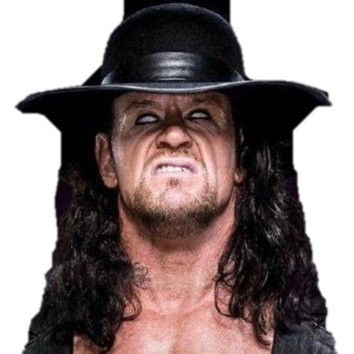
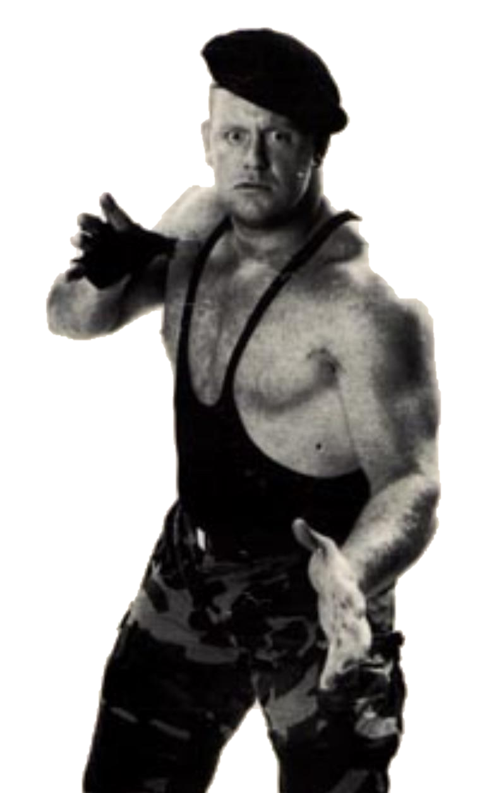
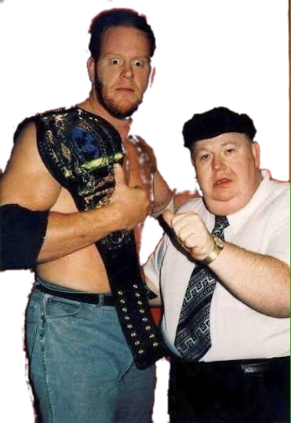
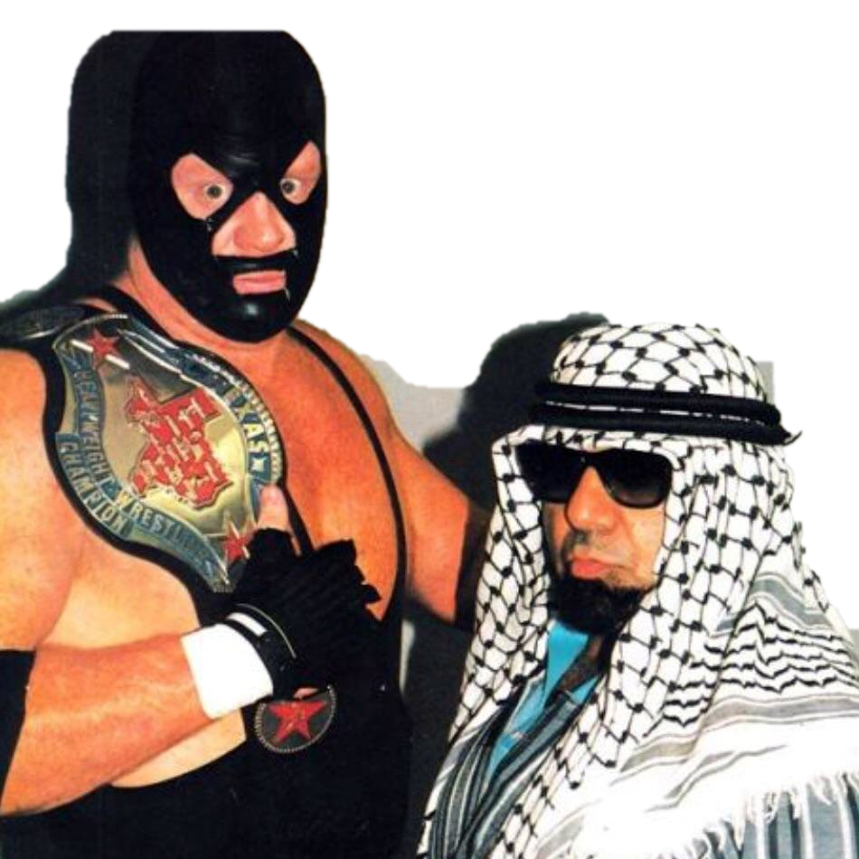
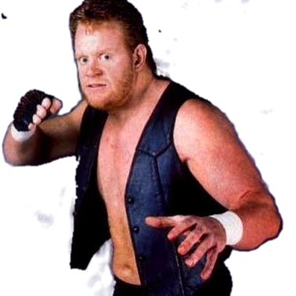
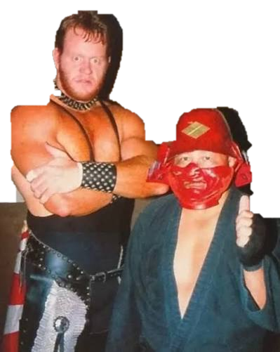

Undertaker fan page!
Who is the Undertaker?:
- Professional Wrestler
- Real name: Mark William Calaway
- Born: March 24, 1965, in Houston, Texas
- Active Years: 1987 to 2020
- Total Matches: 2502





The early years (1986–1989):
The year in WCW (1989–1990):
-
Joined World Championship Wrestling as "Mean Mark Callous"
- Joined The Skyscrapers tag team to replace injured Sid Vicious
- After Skyscraper break up guided by Paul E. Dangerously(Paul Heyman)
- Made efforts to join the WWF (now WWE) after being told by the company booker Ole Anderson that nobody would ever pay money to see him wrestle
- Last WCW match on September 7th
- During his WCW he also Wrestled some matches in New Japan Pro Wrestling(NJPW) as "Punisher" Dice Morgan
- Returned briefly to USWA after leaving WCW
Listen to the entrance music:
Download